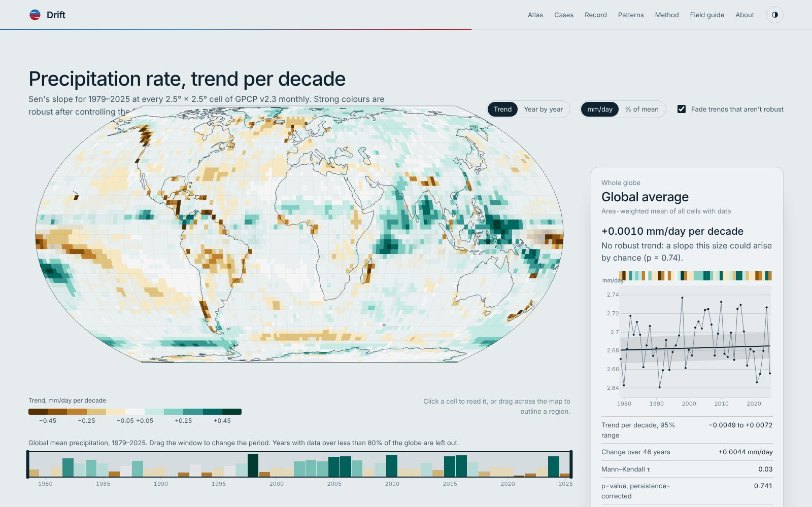
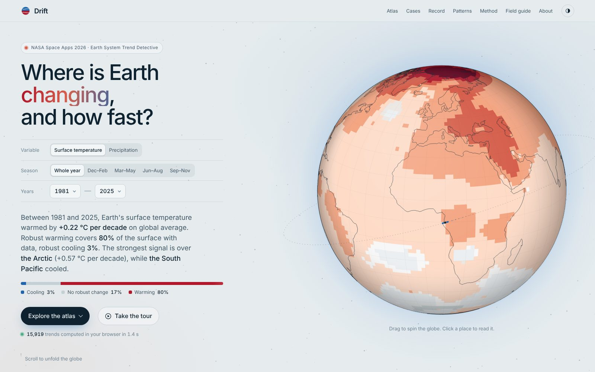
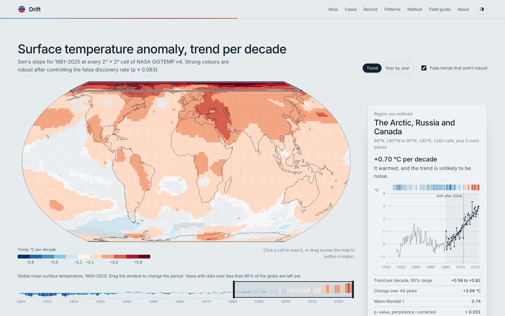
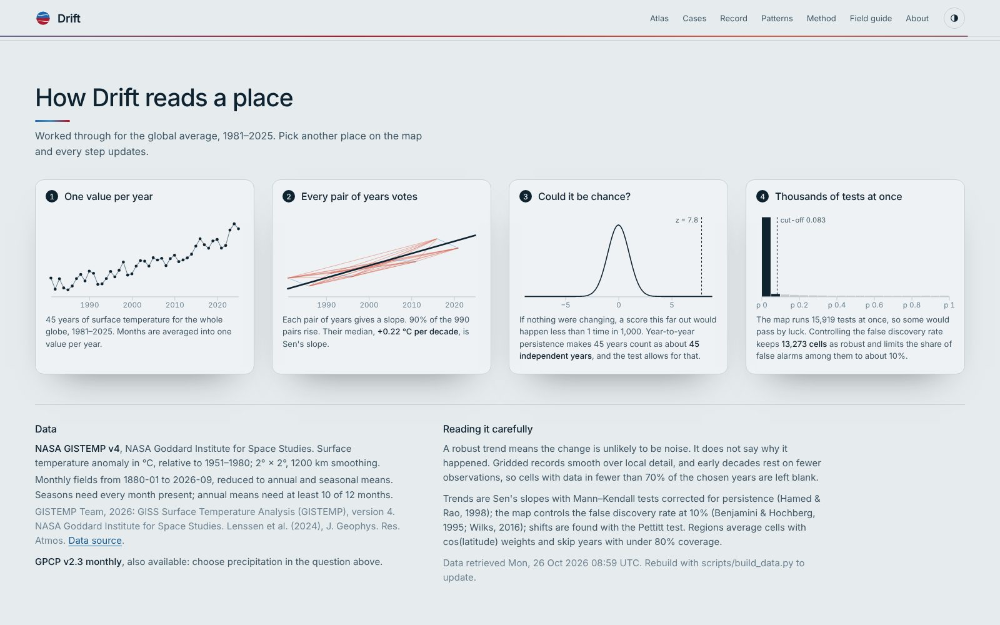
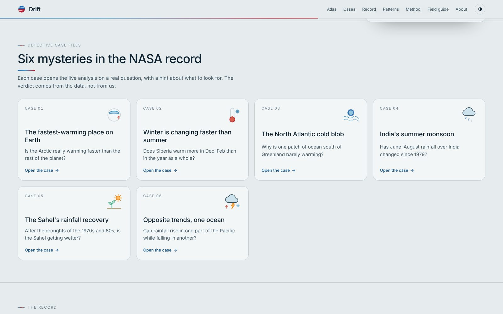

NASA Space Apps 2026 · Earth System Trend Detective
What is changing on Earth, where, by how much, and is it real? Answered live from NASA records, for every place on the planet.
Priyanshu Sharan · BMS College of Engineering, Bengaluru
The problem
A single variable can rise in one region and fall in another, even when one process drives both.
Weather, El Niño and persistent years make chance patterns look real.
Test 16,000 places at 5% and about 800 will "pass" by luck alone.

Our solution
Pick a NASA variable, a season and any window of years. Drift recomputes a trend and a significance test for every grid cell on Earth, right in the browser, and writes the answer in plain language.
trends and tests per question
NASA GISTEMP v4 temperature
GPCP v2.3 precipitation
servers, accounts or keys

Answering the challenge

Temperature or rainfall, by season, over any years.
Every cell mapped; click a place, drag a region or pick a hotspot.
The Arctic: +0.70 °C per decade, over 3× the global +0.22.
p-value, 95% band and false discovery control; weak trends fade.
The science
Median of all pairwise slopes. One freak year can't drag the answer.
Rank-based trend test, corrected for persistent years (Hamed & Rao, 1998).
Benjamini–Hochberg at q = 0.10 keeps false alarms in check across the map.
Finds the year a record jumped, so a step isn't mistaken for a trend.

Built for learners
Arctic warming, Siberian winters, the Atlantic cold blob, India's monsoon, the Sahel, the Pacific.
A spotlight walks first-time users through every part of the atlas.
Anomaly, Sen's slope, p-value, persistence, false discovery rate, in plain words.

Impact
Students, teachers and curious people can test claims about climate themselves, see where change is real, and understand why some patterns are just noise.
Next: more NASA variables (MERRA-2, GLDAS, MODIS), custom region shapes, and classroom worksheets.
Try Drift live →GISTEMP v4 (NASA GISS) · GPCP v2.3 (NASA GSFC / UMD)